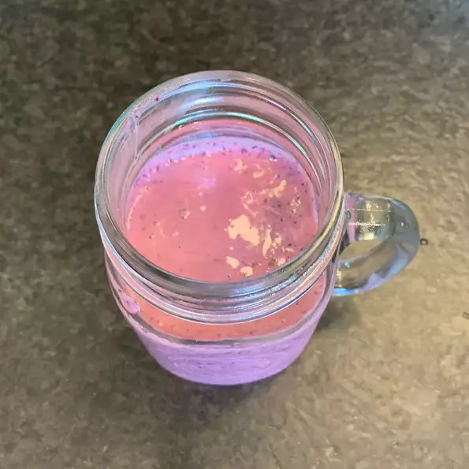

Healthy Blueberry Smoothie

Easy to make recipe to get your day started
Do you have any leftover blueberries in your freezer? Now you can make yourself a healthy smoothie thats quick and easy to make.
Ingredients
- 1 cup fresh blueberries
- 1/2 cup Greek yogurt
- 1/4 cup orange juice
- 1 tablespoon white sugar, or to taste
- 1/4 teaspoon vanilla extract
- 1 pinch ground cinnamon, or to taste
- 3 ice cubes
Steps
- Blend blueberries, yogurt, orange juice, sugar, vanilla extract, and cinnamon together in a blender on low speed for 30 seconds; increase speed to high and blend until smooth, about 2 minutes. Add ice and blend on high until smooth, about 1 minute more.